In this project, I played with bezier curves and bezier surfaces first, using de Casteljau's algorithm in 2D and 3D to finish Part1 and Part2, things went smoothly. However, when I move to the part with mesh edit and half-edge data structure, I encountered so much problems. I encountered tons of bugs when implementing edgeFlip and edgeSplit, I have to clear my mind and think about the problem from the very beginning, drawing things on paper first and then implement it. What's more, the part I spent the most time on is loop subdivision. The tricky thing here is try to determine which edges are the ones to flip. To make it more clear, I update my edgeSplit function and determine the edges to flip in the edgeSplit function. All in all, tough project, but I learned a lot from it.
The algorithm is a recursive interpolation algorithm with a parameter \(t\).
It starts with the original control points, and then keeps interpolating the control points until we get the final "red" point in our GUI.
I implemented it by using a vector to store the so-called "intermediate" points in function evaluateStep, and then use
the control points with parameter \(t\) to get the intermediate points, store them in the vector,
and then recursively call the function until we get the final curve.
|
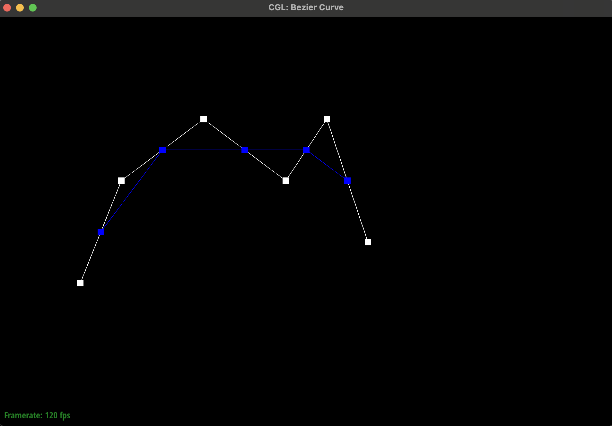
|
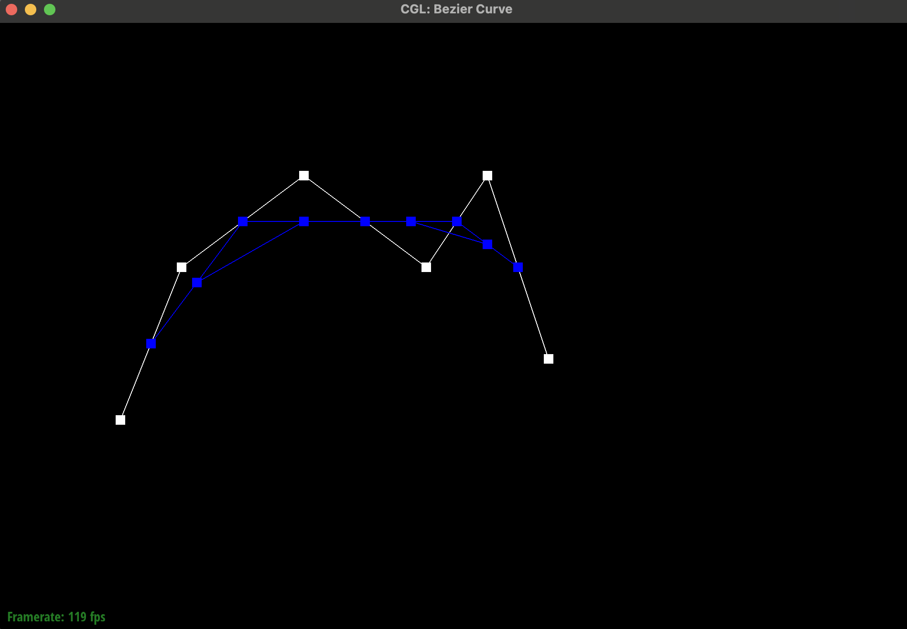
|
|
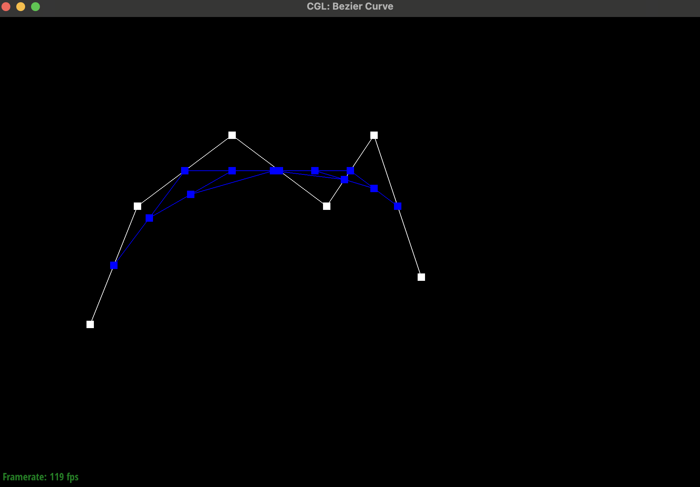
|
|
|
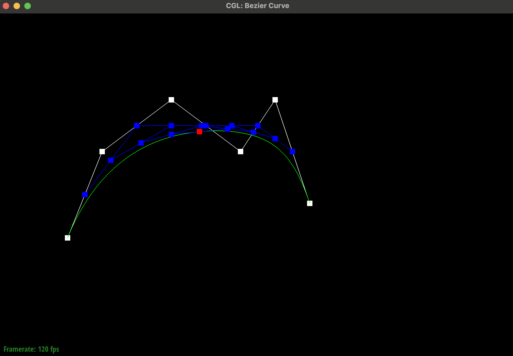
|
Just by using the 1 demensional de Casteljau algorithm in both dimensions, using the "terminal red intermediate points" as the control points for the next step. I implemented it by using a vector to store the all the so-called "terminal red intermediate points" in function evaluate1D, and then recursively call the function until we get the final surface.
The key step is to use cross product to calculate the normal of each face, and then add the normal to the corresponding vertex with the help of do while loop shown in lecture. After that, normalize the normal of each vertex and return.
Since the edge flip will not add new elements into the mesh, the first I do is to grab every old elements in previous mesh,
Note we need to keep track of some of the elements' name changing such as Face and Halfedge, this part is tricky, and I first
crashed my program here. In the end I get it right, but I think it's better to use the name of variables to represent the
corresponding elements before and after the flip.
After the fist step, I just using the setNeighbor function to change the neighbor of the elements, after that, I resigned
four pointers of the edge and the two faces, becuase we have change their corresponding halfedge during edgeflip. After that, return.
|
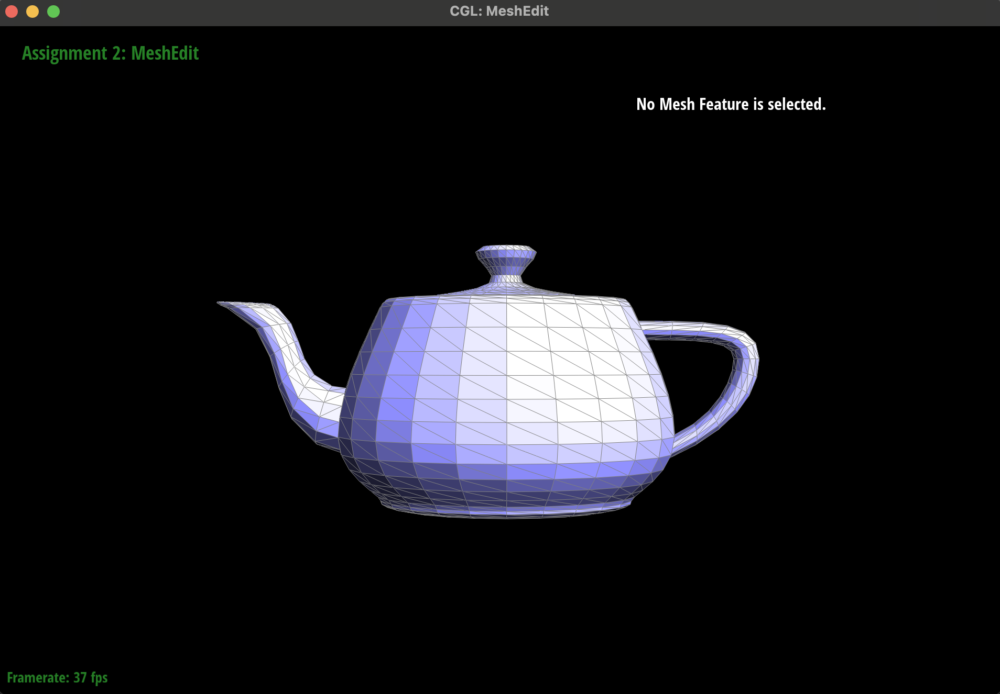
|
|
|
|
For this part, the main bug is just every time I flip an edge, the program crash and crash again. To be honest I had no idea where excatly was wrong at first, but when I look on ed discussion, I knew that my problem is most likely to be mistakes in assignment of the function SetNeighbor, and I indeed found multiple errors there. After fixing them, the program works well.
As we know that split edeges will bring new elements into the mesh, but there're still some elements that can be reused.
So the fist step I do is still to grab every old elements in previous mesh, and then I need to create new elements according to
my drawing on draft paper (which is the same picture on website). Then I still use the setNeighbor function to change the
assignment of elements. After that, I assign the new elements to the corresponding halfedge if the corresponding halfedge is changed
before and after edge split, and return.
One other thing need to mention is that I assign the isNew flag to new edges in this part, since determine which edges
are needed to be flipped in the loop subdivision part is based on this flag. And it's really nasty to debug on that part.
|
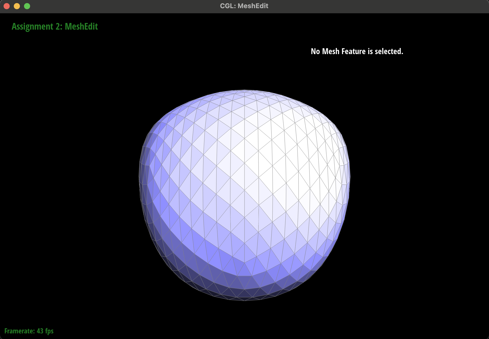
|
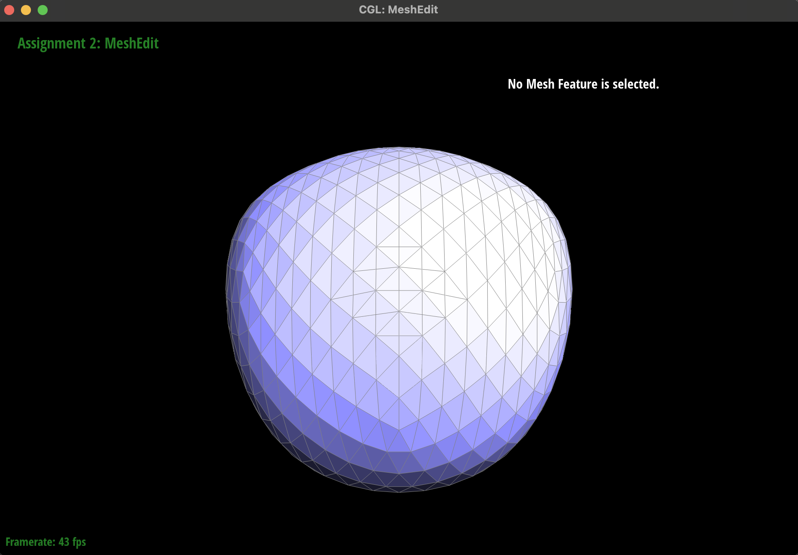
|
|
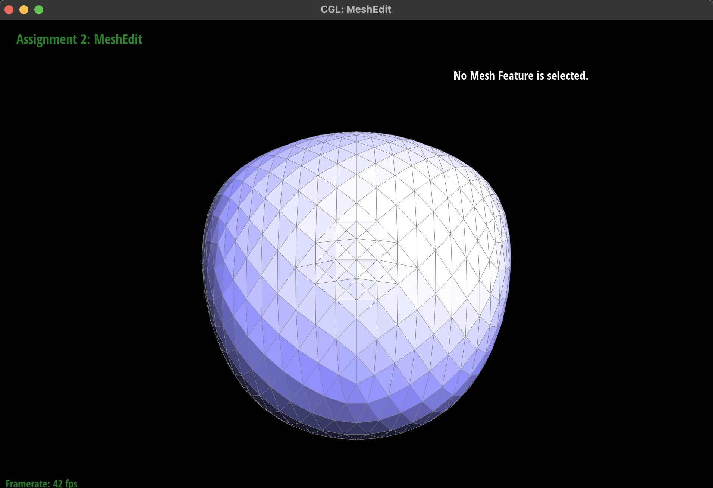
|
|
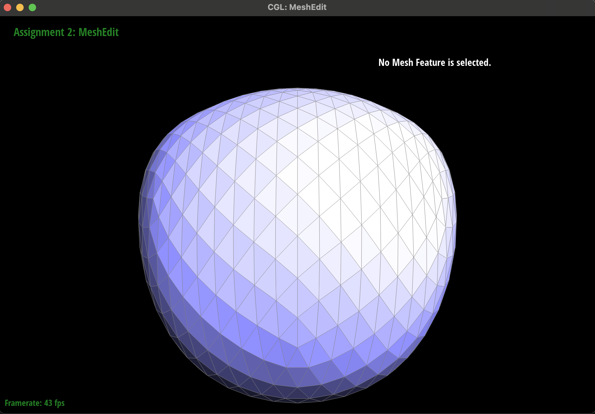
|
|
The edgeSplit itself is not that hard to implement based on the previous experience on edgeFlip.
The true pain is that I have to debug the edgeSplit function and the loop subdivision function at the same time,
I tried to comment out several parts to debug, and in the end I put the part of detecting edges to be flip function in
the edgeSplit function, by setting some newly added edges isNew to true and it works well.
There's one silly mistake I made is that I first miscalculate the new vertex's postion to
the average of point a and b, but it should be a and d accoding to the picture on the website, that take me several time to discover,
but it's not that hard to fix.
NONE
I just follow the steps in the doc and the logic is well explained in the doc, so I just follow the steps and implement it.
The first part is calcluate the new vertex positions and the original vertex's new positions by the instruction on the website.
This part is not hard.
The real tricky part is to determine which edges are needed to be flipped, and I put the part of detecting edges to be flip function in
the edgeSplit function, by setting some newly added edges isNew to true. This is because I really suffer a lot to debug if I try
to determine the right edges to flip in the upsample function.
After split and flip, I just assign vertex's newPosition into vertex's position, the everythin is good.
The mesh becomes more smooth and more round after loop subdivision, and the sharp corners and edges are smoothed out. We indeed can reduce this effect by pre-splitting some edges. The intuition is that if we split the edges before loop subdivision, when we calculate the new positons and using loop subdivision to get new vertex, the new vertex will be closer to the original vertex, and the sharp corners and edges will be preserved show by the subdivision of cube.dae.
|
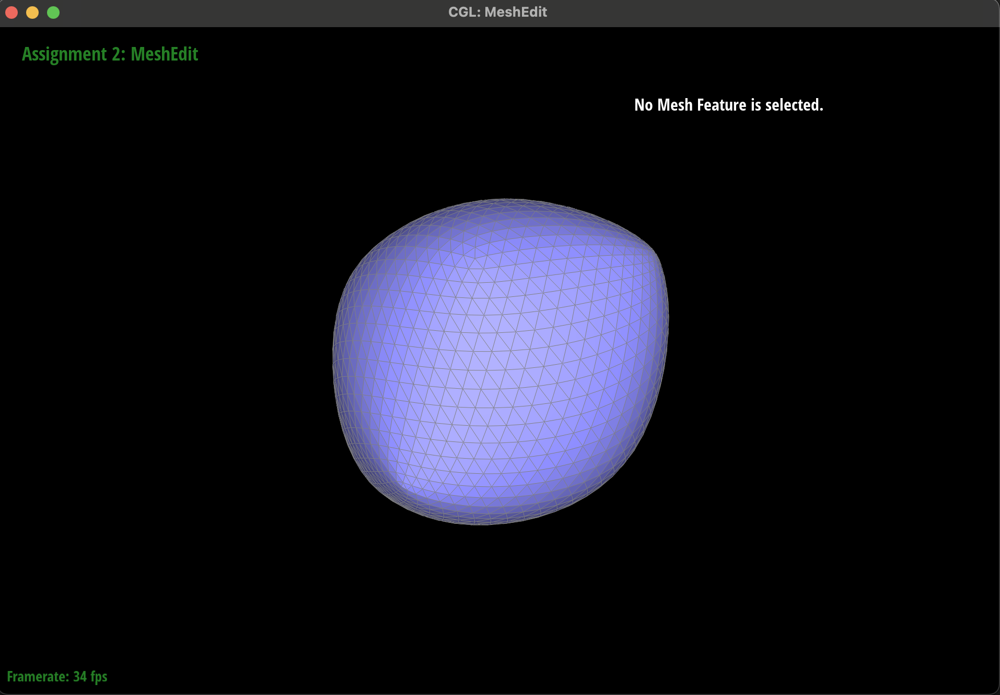
|
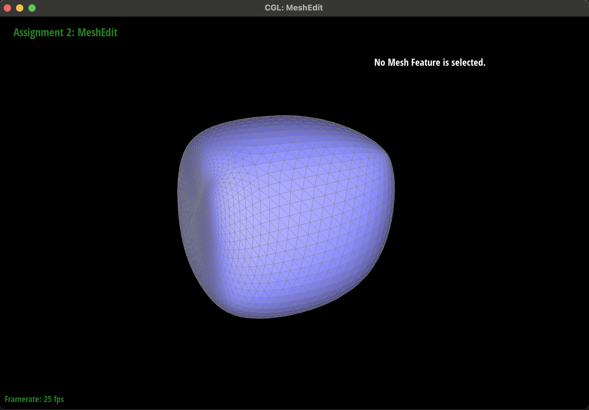
|
The cube becomes slightly asymmetric after repeated subdivisions, this is because the origianl topology of the cube is not symmetric, and the loop subdivision will make the cube more smooth and more round to the original topology structure, so the cube becomes slightly asymmetric. Some pre process can be done by flip and split the edges into a more symmetric topology, and the loop subdivision will make the cube more symmetric. You can see the changes from the following pictures.
|
|
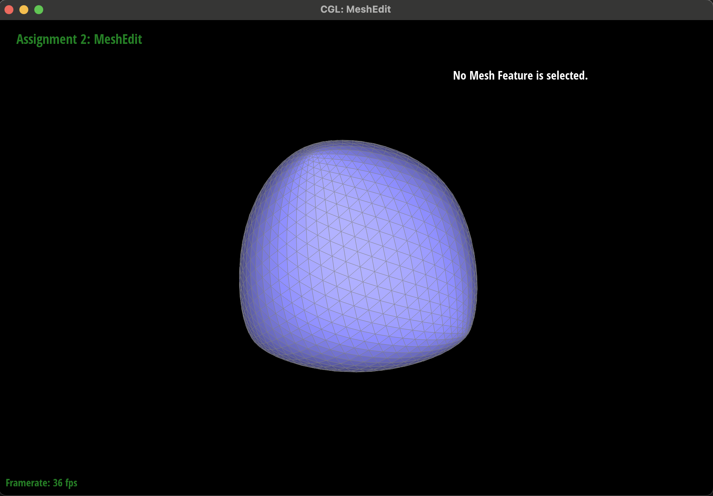
|